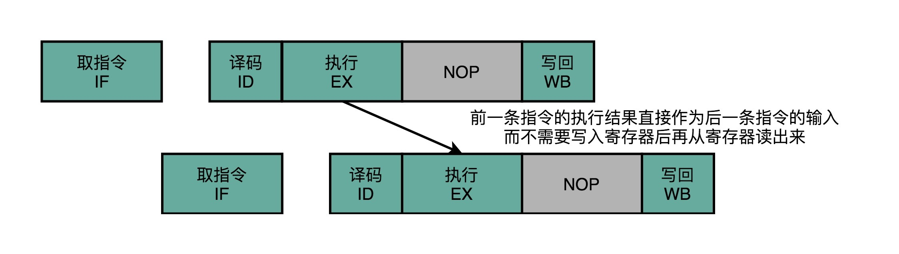

- 00 开篇词 为什么你需要学习计算机组成原理？.md.html
- 01 冯·诺依曼体系结构：计算机组成的金字塔.md.html
- 02 给你一张知识地图，计算机组成原理应该这么学.md.html
- 03 通过你的CPU主频，我们来谈谈“性能”究竟是什么？.md.html
- 04 穿越功耗墙，我们该从哪些方面提升“性能”？.md.html
- 05 计算机指令：让我们试试用纸带编程.md.html
- 06 指令跳转：原来if...else就是goto.md.html
- 07 函数调用：为什么会发生stack overflow？.md.html
- 08 ELF和静态链接：为什么程序无法同时在Linux和Windows下运行？.md.html
- 09 程序装载：“640K内存”真的不够用么？.md.html
- 10 动态链接：程序内部的“共享单车”.md.html
- 11 二进制编码：“手持两把锟斤拷，口中疾呼烫烫烫”？.md.html
- 12 理解电路：从电报机到门电路，我们如何做到“千里传信”？.md.html
- 13 加法器：如何像搭乐高一样搭电路（上）？.md.html
- 14 乘法器：如何像搭乐高一样搭电路（下）？.md.html
- 15 浮点数和定点数（上）：怎么用有限的Bit表示尽可能多的信息？.md.html
- 16 浮点数和定点数（下）：深入理解浮点数到底有什么用？.md.html
- 17 建立数据通路（上）：指令加运算=CPU.md.html
- 18 建立数据通路（中）：指令加运算=CPU.md.html
- 19 建立数据通路（下）：指令加运算=CPU.md.html
- 20 面向流水线的指令设计（上）：一心多用的现代CPU.md.html
- 21 面向流水线的指令设计（下）：奔腾4是怎么失败的？.md.html
- 22 冒险和预测（一）：hazard是“危”也是“机”.md.html
- 23 冒险和预测（二）：流水线里的接力赛.md.html
- 24 冒险和预测（三）：CPU里的“线程池”.md.html
- 25 冒险和预测（四）：今天下雨了，明天还会下雨么？.md.html
- 26 Superscalar和VLIW：如何让CPU的吞吐率超过1？.md.html
- 27 SIMD：如何加速矩阵乘法？.md.html
- 28 异常和中断：程序出错了怎么办？.md.html
- 29 CISC和RISC：为什么手机芯片都是ARM？.md.html
- 30 GPU（上）：为什么玩游戏需要使用GPU？.md.html
- 31 GPU（下）：为什么深度学习需要使用GPU？.md.html
- 32 FPGA、ASIC和TPU（上）：计算机体系结构的黄金时代.md.html
- 33 解读TPU：设计和拆解一块ASIC芯片.md.html
- 34 理解虚拟机：你在云上拿到的计算机是什么样的？.md.html
- 35 存储器层次结构全景：数据存储的大金字塔长什么样？.md.html
- 36 局部性原理：数据库性能跟不上，加个缓存就好了？.md.html
- 37 理解CPU Cache（上）：“4毫秒”究竟值多少钱？.md.html
- 38 高速缓存（下）：你确定你的数据更新了么？.md.html
- 39 MESI协议：如何让多核CPU的高速缓存保持一致？.md.html
- 40 理解内存（上）：虚拟内存和内存保护是什么？.md.html
- 41 理解内存（下）：解析TLB和内存保护.md.html
- 42 总线：计算机内部的高速公路.md.html
- 43 输入输出设备：我们并不是只能用灯泡显示“0”和“1”.md.html
- 44 理解IO_WAIT：IO性能到底是怎么回事儿？.md.html
- 45 机械硬盘：Google早期用过的“黑科技”.md.html
- 46 SSD硬盘（上）：如何完成性能优化的KPI？.md.html
- 47 SSD硬盘（下）：如何完成性能优化的KPI？.md.html
- 48 DMA：为什么Kafka这么快？.md.html
- 49 数据完整性（上）：硬件坏了怎么办？.md.html
- 50 数据完整性（下）：如何还原犯罪现场？.md.html
- 51 分布式计算：如果所有人的大脑都联网会怎样？.md.html
- 52 设计大型DMP系统（上）：MongoDB并不是什么灵丹妙药.md.html
- 53 设计大型DMP系统（下）：SSD拯救了所有的DBA.md.html
- 54 理解Disruptor（上）：带你体会CPU高速缓存的风驰电掣.md.html
- 55 理解Disruptor（下）：不需要换挡和踩刹车的CPU，有多快？.md.html
- 结束语 知也无涯，愿你也享受发现的乐趣.md.html
- 捐赠
23 冒险和预测（二）：流水线里的接力赛
上一讲，我为你讲解了结构冒险和数据冒险，以及应对这两种冒险的两个解决方案。一种方案是增加资源，通过添加指令缓存和数据缓存，让我们对于指令和数据的访问可以同时进行。这个办法帮助 CPU 解决了取指令和访问数据之间的资源冲突。另一种方案是直接进行等待。通过插入 NOP 这样的无效指令，等待之前的指令完成。这样我们就能解决不同指令之间的数据依赖问题。
着急的人，看完上一讲的这两种方案，可能已经要跳起来问了：“这也能算解决方案么？”的确，这两种方案都有点儿笨。
第一种解决方案，好比是在软件开发的过程中，发现效率不够，于是研发负责人说：“我们需要双倍的人手和研发资源。”而第二种解决方案，好比你在提需求的时候，研发负责人告诉你说：“来不及做，你只能等我们需求排期。” 你应该很清楚地知道，“堆资源”和“等排期”这样的解决方案，并不会真的提高我们的效率，只是避免冲突的无奈之举。
那针对流水线冒险的问题，我们有没有更高级或者更高效的解决方案呢？既不用简单花钱加硬件电路这样“堆资源”，也不是纯粹等待之前的任务完成这样“等排期”。
答案当然是有的。这一讲，我们就来看看计算机组成原理中，一个更加精巧的解决方案，操作数前推。
NOP 操作和指令对齐
要想理解操作数前推技术，我们先来回顾一下，第 5 讲讲过的，MIPS 体系结构下的 R、I、J 三类指令，以及第 20 讲里的五级流水线“取指令（IF）- 指令译码（ID）- 指令执行（EX）- 内存访问（MEM）- 数据写回（WB） ”。
我把对应的图片放进来了，你可以看一下。如果印象不深，建议你先回到这两节去复习一下，再来看今天的内容。


在 MIPS 的体系结构下，不同类型的指令，会在流水线的不同阶段进行不同的操作。
我们以 MIPS 的 LOAD，这样从内存里读取数据到寄存器的指令为例，来仔细看看，它需要经历的 5 个完整的流水线。STORE 这样从寄存器往内存里写数据的指令，不需要有写回寄存器的操作，也就是没有数据写回的流水线阶段。至于像 ADD 和 SUB 这样的加减法指令，所有操作都在寄存器完成，所以没有实际的内存访问（MEM）操作。
有些指令没有对应的流水线阶段，但是我们并不能跳过对应的阶段直接执行下一阶段。不然，如果我们先后执行一条 LOAD 指令和一条 ADD 指令，就会发生 LOAD 指令的 WB 阶段和 ADD 指令的 WB 阶段，在同一个时钟周期发生。这样，相当于触发了一个结构冒险事件，产生了资源竞争。

所以，在实践当中，各个指令不需要的阶段，并不会直接跳过，而是会运行一次 NOP 操作。通过插入一个 NOP 操作，我们可以使后一条指令的每一个 Stage，一定不和前一条指令的同 Stage 在一个时钟周期执行。这样，就不会发生先后两个指令，在同一时钟周期竞争相同的资源，产生结构冒险了。

流水线里的接力赛：操作数前推
通过 NOP 操作进行对齐，我们在流水线里，就不会遇到资源竞争产生的结构冒险问题了。除了可以解决结构冒险之外，这个 NOP 操作，也是我们之前讲的流水线停顿插入的对应操作。
但是，插入过多的 NOP 操作，意味着我们的 CPU 总是在空转，干吃饭不干活。那么，我们有没有什么办法，尽量少插入一些 NOP 操作呢？不要着急，下面我们就以两条先后发生的 ADD 指令作为例子，看看能不能找到一些好的解决方案。
add $t0, $s2,$s1
add $s2, $s1,$t0
这两条指令很简单。
- 第一条指令，把 s1 和 s2 寄存器里面的数据相加，存入到 t0 这个寄存器里面。
- 第二条指令，把 s1 和 t0 寄存器里面的数据相加，存入到 s2 这个寄存器里面。
因为后一条的 add 指令，依赖寄存器 t0 里的值。而 t0 里面的值，又来自于前一条指令的计算结果。所以后一条指令，需要等待前一条指令的数据写回阶段完成之后，才能执行。就像上一讲里讲的那样，我们遇到了一个数据依赖类型的冒险。于是，我们就不得不通过流水线停顿来解决这个冒险问题。我们要在第二条指令的译码阶段之后，插入对应的 NOP 指令，直到前一天指令的数据写回完成之后，才能继续执行。
这样的方案，虽然解决了数据冒险的问题，但是也浪费了两个时钟周期。我们的第 2 条指令，其实就是多花了 2 个时钟周期，运行了两次空转的 NOP 操作。

不过，其实我们第二条指令的执行，未必要等待第一条指令写回完成，才能进行。如果我们第一条指令的执行结果，能够直接传输给第二条指令的执行阶段，作为输入，那我们的第二条指令，就不用再从寄存器里面，把数据再单独读出来一次，才来执行代码。
我们完全可以在第一条指令的执行阶段完成之后，直接将结果数据传输给到下一条指令的 ALU。然后，下一条指令不需要再插入两个 NOP 阶段，就可以继续正常走到执行阶段。

这样的解决方案，我们就叫作操作数前推（Operand Forwarding），或者操作数旁路（Operand Bypassing）。其实我觉得，更合适的名字应该叫操作数转发。这里的 Forward，其实就是我们写 Email 时的“转发”（Forward）的意思。不过现有的经典教材的中文翻译一般都叫“前推”，我们也就不去纠正这个说法了，你明白这个意思就好。
转发，其实是这个技术的逻辑含义，也就是在第 1 条指令的执行结果，直接“转发”给了第 2 条指令的 ALU 作为输入。另外一个名字，旁路（Bypassing），则是这个技术的硬件含义。为了能够实现这里的“转发”，我们在 CPU 的硬件里面，需要再单独拉一根信号传输的线路出来，使得 ALU 的计算结果，能够重新回到 ALU 的输入里来。这样的一条线路，就是我们的“旁路”。它越过（Bypass）了写入寄存器，再从寄存器读出的过程，也为我们节省了 2 个时钟周期。
操作数前推的解决方案不但可以单独使用，还可以和流水线冒泡一起使用。有的时候，虽然我们可以把操作数转发到下一条指令，但是下一条指令仍然需要停顿一个时钟周期。
比如说，我们先去执行一条 LOAD 指令，再去执行 ADD 指令。LOAD 指令在访存阶段才能把数据读取出来，所以下一条指令的执行阶段，需要在访存阶段完成之后，才能进行。

总的来说，操作数前推的解决方案，比流水线停顿更进了一步。流水线停顿的方案，有点儿像游泳比赛的接力方式。下一名运动员，需要在前一个运动员游玩了全程之后，触碰到了游泳池壁才能出发。而操作数前推，就好像短跑接力赛。后一个运动员可以提前抢跑，而前一个运动员会多跑一段主动把交接棒传递给他。
总结延伸
这一讲，我给你介绍了一个更加高级，也更加复杂的解决数据冒险问题方案，就是操作数前推，或者叫操作数旁路。
操作数前推，就是通过在硬件层面制造一条旁路，让一条指令的计算结果，可以直接传输给下一条指令，而不再需要“指令 1 写回寄存器，指令 2 再读取寄存器“这样多此一举的操作。这样直接传输带来的好处就是，后面的指令可以减少，甚至消除原本需要通过流水线停顿，才能解决的数据冒险问题。
这个前推的解决方案，不仅可以单独使用，还可以和前面讲解过的流水线冒泡结合在一起使用。因为有些时候，我们的操作数前推并不能减少所有“冒泡”，只能去掉其中的一部分。我们仍然需要通过插入一些“气泡”来解决冒险问题。
通过操作数前推，我们进一步提升了 CPU 的运行效率。那么，我们是不是还能找到别的办法，进一步地减少浪费呢？毕竟，看到现在，我们仍然少不了要插入很多 NOP 的“气泡”。那就请你继续坚持学习下去。下一讲，我们来看看，CPU 是怎么通过乱序执行，进一步减少“气泡”的。
推荐阅读
想要深入了解操作数前推相关的内容，推荐你读一下《计算机组成与设计：硬件 / 软件接口》的 4.5～4.7 章节。
© 2019 - 2023 Liangliang Lee. Powered by gin and hexo-theme-book.